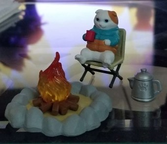
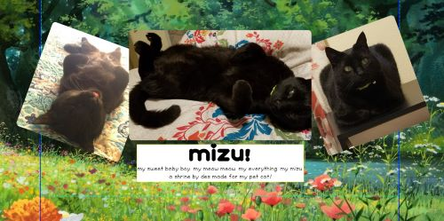
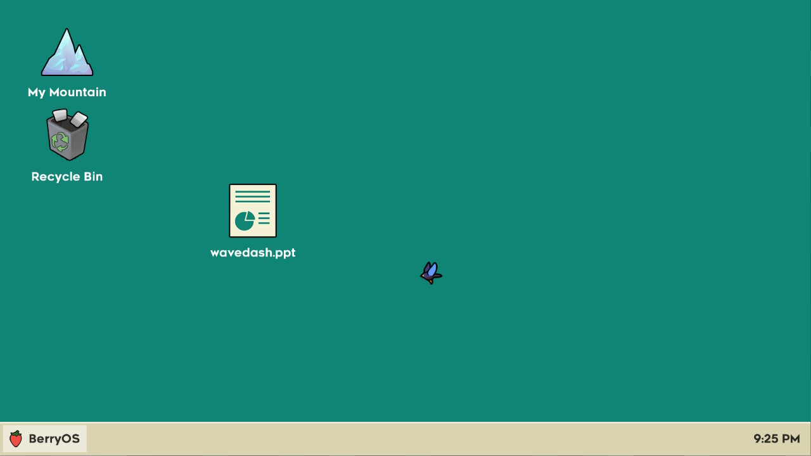
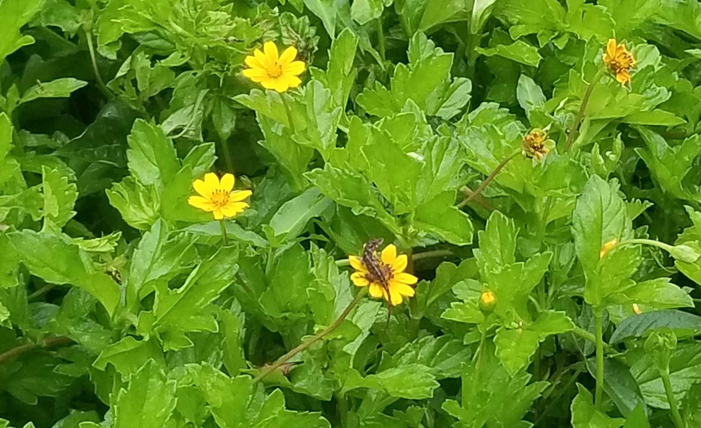

31.may.23
wow. and just like that. mayo vino y se fue.
i quite honestly dont know for how much longer i can keep this (me) up. i should just. not be here. i wish i wasnt here. everyday i stop for a second and think. what am i going to do? and everyday i still down know the answer. sometimes i wonder if im just afraid. afraid of change? afraid of failing? is that why im so frozen? is that why im so scared all the time. maybe. it really gets the best of me somedays. the pep talks that i have to give myself to simply get out of the house is becoming funny at this point. funny that this is where im at. what should i do? maybe one day i'll know. ive been asking myself that question for the past 2 years. what will i do? what is going to happen to me if i never figure it out. it feels so far away. to be certain of what i want in my life and what i want to do with it. it feels like its never going to happen. i am not doing good. and i try. i really really try. and now im just tired. i do nothing. and yet im tired. im tired of doing nothing. but what else will i do?
everytime. everyday. i tell myself that i want to die. actually thats a lie. i say that i NEED to die. because? really. what else am i going to do? /// have i really given up on myself... maybe thats why i feel so shitty and suicidal all the time. how can i ever make progress when i keep telling myself that i'll never amount to anything... it sucks. i feel like theres like 2 diff versions of myself fighting for their live inside of me. one whos always saying why even bother lets just end it all and the other one just barely getting out of it alive. thats how i feel.
i say those things. that i want to die. that i need to die. but deep within me. i know i dont want to. which is also funny. because i dont really have many reasons to live. they are pretty simple. but maybe thats the beauty of it all. if i die i wont be able to listen to the hundreds of music albums that i want to listen to. if i die i will miss out on connections. experiences. i know this. and very well. and yet. i still find myself saying "i need to die". i dont really want to. i just dont really know what else to do.
this is the part where i talk about my depression n suicidal thoughts

oh thats right. my birthday is in 2 days! how wonderful. i'll be 23. im used to spending birthdays alone, or working, so at this point its safe to say that my birthday has lost its spark. this birthday was honestly going to be very very depressing bc i only had like $8 to my name since my car left me a bit broke the past month... so i was pretty convinced this was going to be my worst birthday to date. but my mom actually sent me some money my way. telling me to get myself something nice for my birthday. i cried. not from happiness. but because the first thought that i had was "i dont deserve this"... and i cried. sometimes i feel like i dont deserve nice things. i dont know why. i want nice things. im not a bad person. but i still feel like i dont deserve it. i have a lot of trouble understanding myself.
anyway. broke or not. my bf was going to take me to watch spiderverse with him on my birthday, thats nice. i love my bf lots. i should mention to him how thankful i am of having him by my side. and the same goes with the 3 friends that i have. i should tell the people that i love how thankful i am of having them in my life. because id really be nothing without them
there's these lyrics from a siinamota song that goes:
I still want to live,
So I'll swallow my hatred and live on a little longer
But, but I really want to start it all over
But I still want to live
Therefore I can't do that
and i am constantly reminded of them
 listening to can you hear the whistle blow by 缺省
listening to can you hear the whistle blow by 缺省
28.may.23
visiting my bf today :3
update: just got back from visiting him!! and LOOK AT WHAT HE GOT ME!!! so cuteeeeee ahhhh 
 its a chubby cat enjoying some hot chocolate with a campfire... :3 i loved it. i missed my bf a bit since i hadnt seen him in a bit so today im like :333c
its a chubby cat enjoying some hot chocolate with a campfire... :3 i loved it. i missed my bf a bit since i hadnt seen him in a bit so today im like :333c
also talking about cute figures, in the future i want to a page for plushies and figures i have!!! i dont have a lot tbh but the ones i have mean a lot to me and it would be cool to display them in a page
26.may.23
me and my grandma went out at like 8pm to get some ice cream, i got a waffle cone with 2 scoops: nutella, and the other one was cookies and cream! very yummy
been working on my mizu shrine! been so happy with how its looking so far. i only wanna share the full thing when its done but i wanna share a wip screenshot. mizu is so cute

i cant wait to finish it
25.may.23
wow ok so in the past 2 days i've learned:
- how to change a div's class with a button and jx
- how to make a custom hover tooltip. really hate the default one
- how to make a div pop up by hover!! that was actually really fun to figure out and it was easier than i thought as well
- oh i also learned that imgs dont really like the :focus pseudo-class so i googled it and all you have to do is add
tabindex="0"and boom you're good to go!
i think thats it.
i already mention this on my neocities profile but i also wanna log it here that i found a peppa pig chinese fansite in the recently updated tab and man this shit made me laugh i love it so much. i learned that it aired on 2015 in china!!! thats crazy
today i went ahead and listened to another shinee album i've never heard before, sherlock! since i knew it was their anniversary today. i will have it up in the listening log with my thoughts on it tomorrow! im kinda slowly getting through all of their releases bc at one point i want to talk about all of them and my thoughts on their discography as a whole. dont know if i should listen to the albums in chronological order tho! cus so far ive just been listening to the album cover that catches my eye the most
also i wanna add what i was listening to while writing these so i will start doing that right meow- i mean now
listening to escape by drippin
24.may.23
alright. i finished watching the haunting of hill house. that. gave me chills. that was really good i get it now. im obssesed with how i kept looking at the background bc theres a 90% chance that a creepy face or person was just chilling so i wanted to find as many as i could. that was really chef's kiss. wanna watch the bly manor miniseries as well but me and my boyfriend are gonna watch that together. anyway yeah that miniseries kinda freaked me out a bit and i didnt expect that! some good stuff there. im pretty chill when it comes to horror stuff tbh since i grew up watching horror movies (LOL...) but when something freaks me out a bit its really kinda like a pleasant surprise.
and talking about this, i need to add to my to-do list to make a media tab for films / shows / animes and stuff i read. everytime i go websurfing here i just get new ideas to add to my to do list!!! at the moment im currently working on my mizu (my cat) shrine. i pretty much wrote everything that is gonna go in that page and ngl i kinda shed a tear or two kdfjld  anyway i dont think i will finish working on it today but im excited to get it done
anyway i dont think i will finish working on it today but im excited to get it done
oh also theres a playstation showcase today at 4pm ast. have no expectations on it but we'll see what happens. whos more delutional: me asking for stray 2 or ppl asking for a bloodborne remaster?
playstation showcase update: alrightt. that was pretty okay tbh it could have been worse  super excited for revenant hill since it's made the ppl that made night in the woods !!! i love that game so much it has a very special place in my heart. so im super excited for this new game from them. besides that. eh. i found it super funny that square enix is making a rip-off of splatoon but with foam??? instead of ink i guess? like wow i never saw that coming. fortnite if it was splatoon type shit
super excited for revenant hill since it's made the ppl that made night in the woods !!! i love that game so much it has a very special place in my heart. so im super excited for this new game from them. besides that. eh. i found it super funny that square enix is making a rip-off of splatoon but with foam??? instead of ink i guess? like wow i never saw that coming. fortnite if it was splatoon type shit
22.may.23
well!!! i am very tired!!! i handed out 6 out of the 15 resumes that i printed a few days ago at a nearby mall. now i wait  someone has to call me... right? ...
someone has to call me... right? ...
anyway besides updating this site everyday, ive also been watching the haunting of hill house and tbh its not exactly what i expected but i am really enjoying it so far. im on ep 5 or 6 think.
and i am still playing celeste! (is it the only thing ive been playing for the past month in fact) i finished all the b-sides except for chapter 8's which im currently doing. i cant believe how much fun ive been having with celeste. there's like an in-game (fake) computer desktop screen that shows you how to do somethings and i kinda wanna recreate it on my site. or maybe if i ever wanna make a shrine for celeste i could make it based off that. hmmmm... i just know it would be fun recreating it

 not related to anything but i found this pic in my neocities files and i dont think i've showed it here before...... lizzard chilling on top of a flower. oh how i wish that were me
21.may.23
updated my homepage today! ive been working on it for the past 2 days!! im so happy with how it came out  i really like it. besides this i dont have much to say (as always). ate some banger spaghetti (i hope i spelled that right) that my grandma made yesterday.
i really like it. besides this i dont have much to say (as always). ate some banger spaghetti (i hope i spelled that right) that my grandma made yesterday.
oh! i dont think i mentioned this but this past friday (may 19) i saw something that made me feel horrible (along the lines of me not doing much these days) so i printed like 15 resumes to hand out at a mall tomorrow (today). i had to do some things to my car and i only have $10 in my bank acc as of rn and its so sickening  i honestly feel embarrassed to be going through this and i know thats a really harsh and unfair thing to say about myself but its true. i try with the little energy that i have in me and it never works. but i have to keep going as much as i dont want to. i want to get better. so hopefully with the resumes that i'll be handing out someone will be calling me.... i really hope
i honestly feel embarrassed to be going through this and i know thats a really harsh and unfair thing to say about myself but its true. i try with the little energy that i have in me and it never works. but i have to keep going as much as i dont want to. i want to get better. so hopefully with the resumes that i'll be handing out someone will be calling me.... i really hope
19.may.23
made myself some hot chocolate milk. sometimes i make myself a nice hot chocolate, put some whipped cream on it. and man. i drink it and it makes me feel very warm and safe. like if things might be okay
its getting late but here's some reminders for the site tomorrow:
- add luna's free somebody
- and iiso's salad days to listening log
- polish art page codeee so i can upload it
also i wanna mention that my eyes have been enjoying the bigger font size on these pages
also^2 i played fortnite ranked duos with a friend and ranked to silver III  it was fun
it was fun
16.may.23
realized im turning 23 in less than a month honestly im a bit scared
15.may.23
im saur hungry.... i think im gonna cook myself a porkchop and make some mashed potatoes. i potatoes. you can do so many things with them
OH and talking about food i wanna share a conversation i over heard while i was grocery shopping like a week ago. so basically i was in the eggs section (checking the eggs to see if any of em were broken) and there was this kid that looked like he was in 4th grade with his mom passing by and he goes "if you think about it the coca cola zero can design is pretty smart. because in the regular coca cola can the white kind of represents the sugar right? so in zero its black cus it has zero sugar!" and let me tell you. the entire time i was just staring blankly (idk if thats a word) at the eggs. FROZEN. bc i was so focus on what this random ass kid was saying about coca cola zero cans and tbh he kinda spilled! the entire thing was very funny to me. at the end i said "hey thats smart!" and they both laughed. what a random encounter. that kid changed me
12.may.23
phewww just got done redoing my music page! it should be way cleaner now (i hope...) anyway i think its been a month since i opened up my neocities acc! been loving the vibes here so much. and i love how much ive learned about html and css in just over a month! (i will never understand js lol) since i have so much more Knowledge on these things the last few pages i've been remaking have all been from scratch! and im very happy with them. i tend to get fixated on things and then leave them for a while. but i hope i can continue to maintain this website for a long time. im very happy with this little space i have. and i've been enjoying as well visiting other peoples sites and interacting with them. i am a bit of a loner irl if im being very honest, so i really appreciate everyone who has interacted with me and my website. peace and love on planet earth 
anyway, i feel like i havent written anything abt how im doing irl in a whileee. not that i feel obligated to do so. but its just nice for future reference. lately i've been feeling... just like everything. one day im like super sad and depressed and then the next day im all okay! and oh my god. is it tiring. but i guess i'm trying! because im still here. besides that. yeah not much has changed
09.may.23
as you might have seen, i change the landing page completely! redoing it from scratch was so much fun. now that i have more experience coding i wanna re-do some other pages as well. will probably work on it v slowly but i've been having a lot of fun making pages with different themes, instead of making every page follow the homepage theme. i'll see what i can do!
 also the art i used for the landing page is by japanese artist momoc! i found out about them and their art though siinamota's cokegane no uta's album cover. i love this album cover a lot so i decided to check out the artist behind it and just wow. i fell in love with their art. its so soft and gentle
also the art i used for the landing page is by japanese artist momoc! i found out about them and their art though siinamota's cokegane no uta's album cover. i love this album cover a lot so i decided to check out the artist behind it and just wow. i fell in love with their art. its so soft and gentle
08.may.23
man. lets talk about the most recent page i added to my website: my safe spot! i got inspired to by snowiicat's own safe spot to make this page! i am not doing very well. and even more so recently. i struggle a lot with depression and anxiety. and recently it's been hitting hard and out of nowhere. been going to therapy, im taking my meds. but i still feel lost. and i feel like theres so little i can do. wait i didnt mean to talk that much abt my issues oopsie.
anyway. what im trying to say is that i have my moments and that page is for i am in one of those Moments. its also the first page i coded from scratch!!! and it felt so nice to see everything i've learned so far since its been almost a month since i started using neocities. and im very happy with how the page turned out to be. i'll def be redoing my website in the far future. i do like my layout rn. but im def excited to make one from scratch!
06.may.23
sometimes i be fighting demons in my head for no reason
05.may.23
i watched beau is afraid yesterday and boy. what a ride. i went into this movie absolutely blind. like i know even from watching the trailers you basically still had no clue what exactly it is about but like. i didnt know SHIT. i just knew that this was an ari aster film (average ari aster film enjoyer btw) so i knew i had to go see it. and just ????? wow. i had read that ari aster said this was a "funny" movie. and you see part of me was like ok maybe he wants to step away from horror for a sec but WOW. i was so wrong. i did have my fair share of giggles and laughs at the theater tho (to give him some credit) but most of the time i was fucking terrified and lost and i enjoyed every second of it. it was an insane experience. something i like doing after watching an ari aster movie, is looking up interviews because i am just obssesed over the fact that he's literally just some guy always sitting with his legs crossed and going :D and i don't want this come across as me like being weird. no this is just an observation i've made from watching so many of his interviews. and i find this observation so fucking funny. that this random looking ass guy is always making up the craziest, and most terrifying shit ever. and he was very genuine about saying that this movie was going to be a ""funny"" one because in the interview i was watching he said he was laughing while writing the script and making the film like wow. okay bro whatever i was scared af in that theater. just like beau was.
i just found out that ari aster made a short about beau in 2011 and the archive.org link also has his other shorts that are extremely hard to come by online so i will be watching those right now
02.may.23
content warning: me being depressed
depression has been kicking my ass lately but wow i feel like the urge to just disappear just keeps getting stronger every day. and im scared. i dont really know what to do. if someone reads this dont worry. im not doing anything. but i am just extremely unhappy and idk what to do. i dont know
okay. i feel a tiny bit better. but man. im just tired and with a headache from all the crying
i think im gonna head out. rainbow sidebar tho! this website that makes bg color gradients in css is so awesome. and i also added some pixels to my header. i think it looks really cute!
01.may.23
started the month off with a fresh new haircut that i gave to myself at like 5am!!!! my hair really needed it. it was a bit out of control. been cutting my hair on my own for the past year or so. i really like it :] i like being in control of how i want to look and specially of my hair. i've always wanted short hair but i was too shy to even ask the person if they could cut it shorter at the beauty salons  but at least i don't have to worry about that now
but at least i don't have to worry about that now